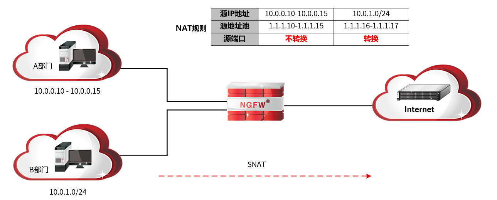
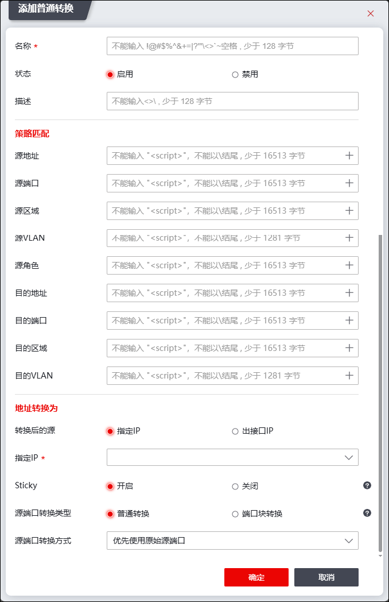

SNAT（Source Network Address Translation，源地址转换），转换数据报文的源IP地址，可隐藏主机真实的IP地址。SNAT主要应用于使用私网IP地址的内网用户访问Internet；在此类网络应用环境下，私网用户数据包经过NGFW时，NGFW会将数据包的私有源IP地址转换为公有IP地址，达到隐藏内网主机真实IP地址，响应报文在公网中有路由，实现使用私有IP地址的内网主机成功访问Internet的目的。
SNAT分类
根据实际应用场景不同，NGFW支持的SNAT技术包括：带端口转换为地址池中地址、转换为出接口所使用的地址。管理员可根据如下特征为特定的场景选择不同的SNAT方式，具体如下：
类型 |
说明 |
|---|---|
带端口转换为地址池中地址 |
适用于需同时访问Internet的用户大于其所申请的公网IP地址个数的网络环境。 说明： 1）该种转换方式属于多对一转换，多个用户可复用同一个IP地址，NGFW通过源端口号区分不同用户； 2）该种转换方式可以隐藏局域网主机真实IP地址和端口号。 |
转换为出接口所使用的地址 |
适用于公网IP地址为动态获取的局域网环境。 注意：此种网络环境中，“源地址转换为”参数需设置为绑定接口的安全域，因此在配置该类型SNAT前，需将物理接口与安全区域绑定，关于物理接口与安全区域的绑定具体请参见 区域。 说明： 1）该种转换方式属于多对一转换，所有用户复用NGFW出接口IP地址，NGFW通过源端口号区分不同用户； 2）该种转换方式可以隐藏局域网主机真实IP地址和端口号。 |
应用场景举例
NGFW部署于局域网与公网的边界，局域网申请了固定公网IP地址“1.1.1.16-1.1.1.17”供内网用户访问公网，其中B部门用户IP地址处于10.0.1.0/24子网内，访问Internet时共用两个公网IP地址。其网络拓扑结构如下图所示。

实现方案：采用SNAT的“带端口转换为地址池中地址”方式，支持内网用户访问Internet。为使内网用户能根据需求访问公网服务器时，其SNAT配置方法如上图中的“NAT规则”所示。
lB部门主机（10.0.1.2）访问Internet时，NGFW处理数据流程如下：
1）NGFW接收到主机（10.0.1.2）发往公网服务器的数据包后，按顺序匹配NAT规则表，发现有匹配数据报文的“源端口做转换”方式SNAT规则，停止检索。
2）根据成功匹配的NAT规则，从源地址池中选择一个IP地址替换数据报文的源IP地址，并转换源端口号，然后创建会话，将数据报文发送出去。
3）NGFW接收到公网服务器的响应报文后，根据步骤2）创建的会话表，将报文的目的地址替换为主机（10.0.1.2）真实的IP地址，端口替换为主机原始的端口号，然后将报文发送给主机（10.0.1.2）。
配置SNAT的具体操作如下：
| 步骤1 | 选择 。 |
| 步骤2 | 点击“ ”，选择“普通转换”，弹出添加普通转换窗口，在“地址转换”页签中选择源端口转换类型为“普通转换”，如下图所示。 ”，选择“普通转换”，弹出添加普通转换窗口，在“地址转换”页签中选择源端口转换类型为“普通转换”，如下图所示。 |

在添加SNAT规则时，各项参数的具体说明如下表所示。
参数 |
说明 |
|---|---|
名称 |
必填项。不能输入!@#$%^&+=1?1<>'~空格，少于128字节。 |
状态 |
状态可选项：启用、禁用。 |
描述 |
输入该规则的描述信息，不能输入<>\，少于128字节。 |
源地址 |
配置数据报文的源地址应满足的条件。 点击下拉列表选择已设置好的地址对象，或者点击『添加』，新建地址对象，关于地址对象的配置请参见 地址。 |
源端口 |
配置数据报文的源端口应满足的条件。点击“+”选择已设置好的服务对象，或者点击『添加』，新建服务对象，关于服务对象的配置请参见 服务。 |
源区域 |
配置数据报文的源区域应满足的条件。点击“+”选择已设置好的区域对象，或者点击『添加』，新建区域对象，关于区域对象的配置请参见 区域。 |
源VLAN |
配置数据报文的源VLAN应满足的条件。点击“+”选择已设置好的VLAN对象，或者点击『添加』，新建VLAN对象，关于VLAN对象的配置请参见 VLAN。 |
源角色 |
配置数据报文的角色应满足的条件。点击“+”选择已设置好的角色对象，或者点击『添加』，新建角色对象，关于角色对象的配置请参见 角色。 |
目的地址 |
配置数据报文的目的地址应匹配的条件。点击“+”选择已设置好的地址对象，或者点击『添加』，新建地址对象，关于地址对象的配置请参见 地址。 |
目的端口 |
配置数据报文的目的端口应满足的条件。点击“+”选择已设置好的服务对象，或者点击『添加』，新建服务对象，关于服务对象的配置请参见 服务。 |
目的区域 |
配置数据报文的目的区域应当匹配的条件。点击“+”选择已设置好的区域对象，或者点击『添加』，新建区域对象，关于区域对象的配置请参见 区域。 |
目的VLAN |
配置数据报文的目的VLAN应满足的条件。点击“+”选择已设置好的VLAN，或者点击『添加』，新建VLAN，关于VLAN的配置请参见 VLAN。 |
转换后的源 |
选择转换后的源地址为指定IP地址或出接口IP地址。 说明： 转换后的源为“出接口IP”，需设置为绑定接口的安全域，因此在配置该类型SNAT前，需将物理接口与安全区域绑定，关于物理接口与安全区域的绑定具体请参见 区域。 |
源地址转换 |
必选项。当转换后的源为“指定IP”时，需设置SNAT源转换的地址池，可为主机、范围、子网、地址组。 说明： 1）选择主机地址对象时，表示将源地址固定映射为IP地址； 2）选择地址范围对象或子网对象时，表示将源地址动态映射为某一网段或某一地址范围内的地址； |
Sticky |
源IP转换同一性开关。启动后，相同源IP的数据包经过地址转换后为其转换的源IP地址相同。 |
源端口转换方式 |
当转换后的源为“指定IP”时，需选择源端口转换方式。 下拉框选项包括：优先使用原始源端口、随机转换源端口、不转换源端口。 说明： 优先使用原始源端口：首先尝试使用源端口，如果源端口被占用，则转换为其他未被占用的端口。 随机转换源端口：随机转换源端口，转换后的源端口由系统内部确定。 不转换源端口：不转换源端口。 |
|
²如果在某一条SNAT规则中设置了多个条件，则数据包必须同时满足这些条件才认为成功匹配该规则，才根据规则相应的动作转换数据包的IP地址或端口。 |

| 步骤3 | 点击【确定】按钮完成NAT规则的配置。 |